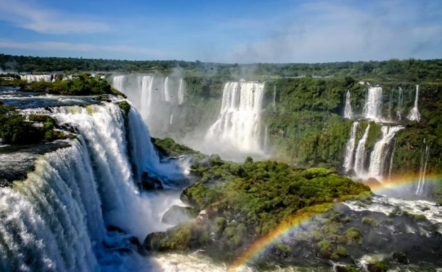
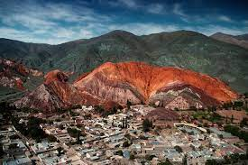

Cataratas

Las cataratas del Iguazú son el principal centro turístico del noreste de Argentina, y uno de los principales de todo el país.
En ellas, los paseos se encuentran principalmente en el lado argentino, aunque desde el lado brasileño se tiene una vista panorámica.
En 1984 el sector argentino de las cataratas, el parque nacional Iguazú, fue declarado Patrimonio de la Humanidad por la Unesco.
Cerro Siete Colores

El Macizo de los Siete Colores es un cerro ubicado en las afueras de la ciudad de Purmamarca. La mejor forma de verlo y excursionarlo es realizando un recorrido desde la ciudad de Purmamarca o realizando un trekking por la parte de atrás del cerro, llamado El Camino De Los Colorados, o escalarlo. También, se puede subir a los miradores que rodean dicho pueblo para apreciarlo de frente. La mejor parte del día para observarlo es sin duda el amanecer.
Patagonia

Las cinco espectaculares provincias que forman La Patagonia se extienden desde las tierras heladas y picos de granito de la Cordillera de Los Andes hasta la escarpada costa atlántica. Lugar de ensueño para los amantes de la naturaleza, hogar de la numerosa colonia de elefantes marinos de la Península de Valdés y de la mayor colonia de pingüinos de Magallanes del mundo, situada en la reserva de la Punta Tombo.